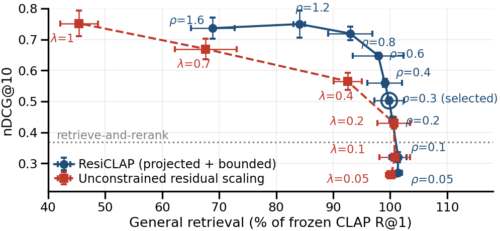
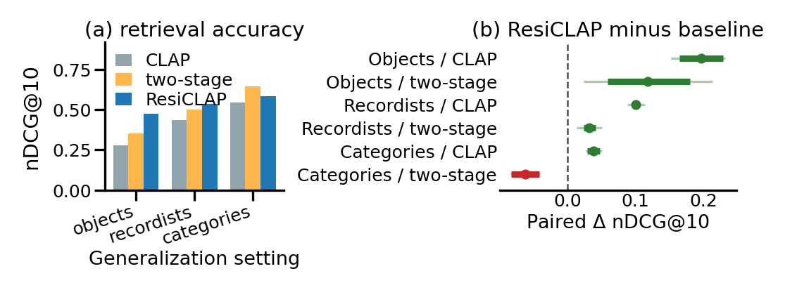

Results
Three questions drive the evaluation: does the enhanced embedding actually find the right sound, does capping the correction really preserve CLAP, and does the improvement survive outside the conditions it was trained on?
Fine-grained accuracy rises from 0.232 to 0.549 — a gain of +0.317 (95% confidence interval [0.192, 0.447]) — while general audio search on Clotho and FSD50K stays at or above frozen-CLAP level.
Two measures are used throughout. R@1 is how often the single top-ranked recording is a correct one. nDCG@10 scores the whole top-10 ranking, rewarding correct recordings more the higher they are placed. Higher is better for both.
Does the bound matter?
The table below is the paper's main result. The first three rows are comparison systems; the rest walk from a completely uncontrolled correction up to the full model. That walk separates two mechanisms that are easy to confuse: steering the correction perpendicular to the frozen embedding, and capping its length.
| Model | R@1 | Att. | Dec. | Bri. | Macro | Clotho | FSD50K |
|---|---|---|---|---|---|---|---|
| Frozen CLAP | 0.208 | 0.235 | 0.233 | 0.229 | 0.232 | 0.320 | 0.375 |
| FineLAP | 0.208 | 0.271 | 0.134 | 0.242 | 0.216 | — | — |
| Rerank baseline | 0.417 | 0.352 | 0.385 | 0.368 | 0.368 | — | — |
| Uncontrolled correction | 0.903 | 0.804 | 0.753 | 0.698 | 0.752 | 0.110 | 0.212 |
| Perpendicular steering only | 0.875 | 0.807 | 0.766 | 0.661 | 0.745 | 0.098 | 0.213 |
| Length cap only | 0.472 | 0.455 | 0.389 | 0.431 | 0.425 | 0.315 | 0.378 |
| Without the temporal branch | 0.500 | 0.561 | 0.359 | 0.412 | 0.444 | 0.348 | 0.448 |
| ResiCLAP (reference) | 0.500 | 0.608 | 0.366 | 0.377 | 0.450 | 0.347 | 0.450 |
| ResiCLAP (tuned) | 0.667 | 0.719 | 0.519 | 0.409 | 0.549 | 0.352 | 0.473 |
Fine-grained retrieval: R@1 plus nDCG@10 resolved per attribute — attack, decay, brightness — and Macro, their mean. Clotho and FSD50K are broad-retrieval R@1. — is not evaluated. Fine-grained retrieval uses 400 held-out RealImpact test recordings and 24 queries; broad retrieval uses 200 Clotho and 200 FSD50K examples. Ablations use the reference budgets (ρa, ρt) = (0.20, 0.05); tuned budgets are (0.30, 0.40). ResiCLAP rows are means over three seeds. Row names follow the paper's Table 1, where the correction is called a residual: uncontrolled correction = unconstrained residual, perpendicular steering = orthogonal projection, length cap = norm bound.
An uncontrolled correction reaches the best fine-grained score of all (0.752) but collapses general search to 34% and 56% of CLAP's Clotho and FSD50K performance. Perpendicular steering on its own barely helps — 0.745 with only 31% of CLAP's Clotho performance left. Adding the length cap changes the picture completely: fine-grained accuracy stays well above frozen CLAP while general search returns to its original level. It is the length of the correction, not its direction, that preserves CLAP's semantic structure.
Choosing the budget
The norm bound ρ is the one knob that trades fine-grained accuracy against general retrieval. Sweeping it traces a frontier, and comparing that frontier against simply rescaling an unconstrained residual shows what the projection and bound actually buy.

The selection rule is fixed in advance: keep at least 95% of frozen CLAP's R@1 on both Clotho and FSD50K. That rules out the highest-accuracy setting — ρ = 1.2 reaches 0.749 nDCG@10 but drops general retrieval to 84% — and selects ρa = 0.30, which holds general retrieval at essentially CLAP level. The operating point is chosen by the preservation constraint, not by maximum accuracy.
Does it generalise?
Three settings test progressively harder transfer: unseen physical objects, unseen recording contributors, and entirely unseen sound categories.

| Setting | Queries | Result |
|---|---|---|
| Unseen objects (5 RealImpact splits) | 120 | ResiCLAP beats both baselines in all five splits; gains vary by material from +0.012 to +0.267 nDCG@10. |
| Unseen contributors (FSD50K) | 1,250 | Beats the rerank baseline in all five splits and 39 of 51 categories. Strongest for attack (+0.058) and brightness (+0.042); decay is flat (−0.003). |
| Unseen categories (FSD50K) | 266 | Still beats frozen CLAP, but falls below the rerank baseline in every split. |
An honest limitation. When the sound category itself is new, explicit property scoring wins. It measures properties directly and so depends less on category structure seen during training. ResiCLAP transfers well to new examples and new recording conditions within familiar categories, but not yet to unfamiliar ones. Note also that the rerank baseline consumes the same signal measurements that define the ground truth, which makes it a demanding, measurement-privileged comparison.
Reproducibility
All reported numbers are means over three training seeds (7, 17, 27) with frozen, cached CLAP features, so the evaluation is deterministic given the checkpoints. Confidence intervals are bootstrap intervals resampled over queries, and additionally over materials or categories where the grouping is meaningful.